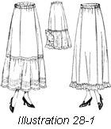

1926—The New-Way Course in Fashionable Clothes-Making
Lesson 28—Petticoats
Petticoats
As long as women love soft, dainty pretty dresses, the petticoat will hold a place all its own. It will remain one of the most indispensable garments in the woman's wardrobe. Whether it is frilly and much beruffled or severely plain with nothing but a hem to finish it off, the petticoat serves two distinct purposes—first as a protection beneath dresses of very fine material and second as a particularly dainty undergarment.
The petticoat should be made with a great deal of care. Next to the corset, it is one of the most important foundations of your gown. A petticoat that fits poorly, that puckers at the waistline and distorts the lines of the figure, spoils the most attractive costume. On the other hand, the well-fitting petticoat which conforms with the lines of the figure and fits smoothly over the hips will greatly enhance the gown and give to it an added appearance of smartness.
In making petticoats, therefore, be as careful of the fit and hang of the garment as you would be of the outside skirt. If the petticoat is for a stout woman, there should be slight fulness at the top. For the slender woman there may be more fulness but it should be evenly adjusted around the waist and not concentrated in one spot.
Under a tailored skirt or dress, there can be nothing more appropriate than a well-made silk petticoat. Under very thin skirts, a shadow-proof petticoat obviates the necessity of wearing two petticoats that are not shadow-proof. For wear under plain dresses, petticoats should be plain and of washable material. If the dress is elaborate and quite "dressy," the petticoat may do justice to it by being gay with many ruffles and lace edgings—with perhaps a ribbon beading peeking through.
About Petticoat Materials (Illustration 28-1)
Many materials have been found useful in the making of petticoats. Pique, for instance, has been found almost shadow-proof—as are also sateen and satinet. These materials may be used to advantage in making petticoats for wear under light wash dresses. For the better petticoats, one may use taffeta, silk jersey or a heavy crepe.
The width of the skirt varies with the changing modes. Some seasons the petticoats are so narrow that one can hardly step in them; other seasons the petticoats are so full that they are strangely reminiscent of the day of hoop skirts. But as already mentioned, women are becoming sensible and are no longer slavish followers of stupid modes—and even petticoats are becoming sensible in width.
If the petticoat is to be two yards wide or less, two lengths will be found necessary, measuring from the waistline to the bottom of the skirt. To this is added, of course, the width of hem to be used.
When petticoats are wider than two yards it is necessary to have three lengths of material. This is for a plain skirt; any flouncing or ruffling would require extra material. In trimming petticoats with flounces never have the flounce wider than the skirt under which it is to be worn. If you do the outside skirt will hang poorly.
One and one-half is usually allowed for ruffles on petticoats. However this is quite a wide ruffle for the narrow skirts worn the last few seasons. If your petticoat is one yard and a half wide and your outside skirt is the same width, it is wisest to use the petticoat without a flounce. However, if the petticoat is to be worn under a very thin dress in which the skirt is two yards or more in width, the petticoat itself may be a yard and a half wide and the flounce two yards. Always consider carefully before adding trimming of any kind to a petticoat. Be sure that in obtaining trimming you do not create a bad effect which makes the outside skirt hang unevenly.
The Two-Piece Shadow-Proof Petticoat
Let us now see exactly how the two-piece petticoat is made. You will probably want to make one or two petticoats for yourself before leaving this lesson—just to prove to yourself that you have mastered every detail. If you follow these simplified steps carefully you will have no trouble in making petticoats that are attractive and well-fitting.
- Make this petticoat of two pieces as your model pattern is made.
- Fit the skirt and turn the desired length at the bottom.
- Now cut a fitted facing for the bottom of the petticoat, making it 15 to 18 inches wide. Use your skirt pattern as the guide for this facing. Lesson 4.
- Make a tailored seam on the wrong side of the material, following immediately with a second stitching of this seam to a point just below that point where the top of your facing is to come. Below this point trim both edges of the seam even.
- Join the pieces of facing with a plain seam on the wrong side as taught in Lesson 4.
- To facilitate your work, press these seams open.
- Place the facing on the petticoat, the wrong sides together, with the seams matching and the lower edges even.
- Baste the two thicknesses together with even basting at the bottom, and above this pin them together flat and even. At the top of the facing make on underturning one-fourth of an inch wide and hem or machine stitch this turned edge to the petticoat.
- The bottom of the petticoat may be stamped in scallops and embroidered, or the edges may be turned toward each other and any of the little scallop finishes that can be purchased at notion counters applied. This may be accomplished by placing the upper or straight edge of the trimming between the turned-under edges and machine-stitching the three together.
- If you prefer, the scallops may be cut very large and bound, using the binder attachment on the sewing machine. (Lesson 9.) This makes a sturdy trimming that will resist many launderings.
- The petticoat may be finished simply with a self-material hem, the fitted facing being omitted. Hemstitching always adds a neat finish.
- Petticoat plackets should be finished with a binding, or they should be continuous plackets. They should always be in the seam.
- The top of the petticoat should be put in a belt the correct length, allowing extra length on one end of the belt so that it will lap under the other end of the belt the width of the under side of the placket. Sew buttons on this end and work a plain buttonhole in the other end of the belt.
- If you have done your work well, following each step in its correct order and not leaving it until it was thoroughly mastered, you now have a petticoat that you will be proud to wear and one that is shadow-proof. Before putting it away, press it carefully and draw out basting threads that may have remained.
Three-Piece Petticoat
You have learned how to make the two-piece petticoat. Now, using the same two-piece skirt pattern, you are going to learn how to make the three-piece petticoat. By skirt pattern, we mean the model pattern which you made in an earlier lesson.
- Measure the top and bottom of the two-piece skirt pattern after the seams have been pinned together.
- Divide the top measure so that one-third is in the front and one-third on either side of the back. For instance, if your waist measure is twenty-eight inches, one-third of the pattern at the waist will be 4 2/3 inches, and the remaining part will measure a trifle over 9 1/3 inches, depending on the fulness required. Remember, this is one-half the pattern.
- The hip measure should be divided in the same way, as should also the bottom measure. With your yard stick as your guide, draw a line through these marks from the top of the skirt to the bottom. Now take the pins from the seam in the two-piece pattern from the top down to the hip line, and open so the pattern will lay flat.
- On the line just marked make the same curve that is found on the seam of the pattern, taking out the same amount at the top graduating to nothing at the hip. One-half of this must be taken off the front and one-half off the back. Now lay your skirt pattern as it is pinned and marked on a fresh paper and trace through the new line made; also along the bottom and the top and down the center of the back.
- Remove the pattern and cut out the new pattern along the traced lines. This three-piece skirt pattern will have a seam in the back which will be on a garment bias.
- In cutting your petticoat be sure to make allowances for seams as the pattern now has no seam allowances. Proceed to prepare the material and pattern for cutting.
- The center front of the pattern should be on the length-wise fold of the material, and the front edge of the side-back pieces should be on the selvedge. Cut out and baste together.
- At this stage, it is necessary for you to slip on the petticoat and adjust the belt to get the proper length. Or get the line where the ruffle is to be attached if the skirt does not go to the bottom of the ruffle.
- Having adjusted the petticoat to your satisfaction, remove and attach your ruffle in the most convenient way. See Lesson 7.
- The placket should be finished in the same at the back and should be either a bound or continuous placket. The petticoat should be put in a belt set on or sewed on in the form or a facing. (Lesson 8.) Allow enough extra length on this belt to enable it to lap under the width of the under portion of the placket. On this under portion sew a button and work a buttonhole in the other end.
Petticoat Ruffles
The "fluffy ruffles" of grandmother's day are not quite forgotten. In summertime, when nothing seems quite as pretty as a crisp little frock of organdie or voile, the ruffled petticoat comes into its own. And then one wonders what kind of ruffle it shall be, how it shall be made, how it shall be trimmed.
Embroidered ruffles are serviceable and pretty. The ruffle may be bought ready-made and attached during the process of making the petticoat. Or a ruffle may be made of the material and hand-embroidery added.
With the edge stitcher on the sewing machine many delightful ruffle-trimmings may be made. Lace insertion may be alternated with rows of fine tucking, and the ruffle edged with lace to match the insertion. Or there may be two rows of insertion to one row of tucking—or any number of other interesting arrangements. Ruffles that are made of tucked material with bands of insertion between the group of tucks and medallions set at regular intervals are attractive and pretty, indeed.
Silk Petticoat
Silk petticoats, when bought ready-made, are a luxury. When made at home they cost hardly more than a cotton petticoat would cost you if you bought it. And you will enjoy making silk petticoat for yourself—as the results are usually so surprisingly pretty.
For instance, a plaited flounce on a silk petticoat, a flounce made completely of tiny ruffles, a plain deep hemstitched hem—one can hardly realize how pretty they look when finished. Let us see exactly how you would proceed with the making of this type of dress-petticoat.
- The material and pattern are pressed free of wrinkles and the material cut as in previous garments. The top of the petticoat may be either a two or three-piece garment according to directions.
- To make a plaited flounce, which is one of the most attractive types of trimming for the silk petticoat, measure the width of the bottom of the petticoat and allow two and one-half or three times this length. Decide the width of the ruffle and cut it from selvedge to selvedge or cross-wise of the material.
- Hem the lower edge with any width hem desired. If a narrow hem is used, the hemming attachment on the sewing machine will be found a valuable time-saver. For the wide hem, handstitching may be used. (Lesson 6.)
- Having prepared the ruffle, send it to your dealer to have it knife or accordion plaited. When it is ready, apply it in the same way as you would apply an ordinary ruffle.
A novel petticoat to be worn with tailored dresses or suits is made of two strips of silk, satin or other suitable material. These strips are from 18 to 24 inches in width. They are cut the desired length and hemmed at the sides with a narrow hem. At the bottom the hem is made from two or three inches in width and weighted. Weighted tape is best for this purpose. The top is faced or hemmed and an elastic belt is drawn through the casing thus formed.
Make about five small straps to connect the two panels. These straps should be made of silk or of matching ribbon and should be about one inch wide and long enough so when the ends are attached to the panels the garment will be smooth around the hips. The first strap connecting the panels should be about 8 inches below the waist and the lowest one should be about the knee.
Another very attractive way to join these panels would be to work eyelets down the sides of the panels and lace the edges together with ribbon.
A petticoat of this kind will make your garments shadow proof without adding much to the weight.
Before leaving this lesson to master the next one, review it carefully from beginning to end. Just reading the text matter is not enough. Carry out the directions. Make petticoats. Test yourself. When you feel confident that you can make as many pretty petticoats as you want, and make them not only pretty but perfect-fitting, proceed to the next lesson which teaches you all about underwear.